| 日付 | 2024年4月14日（日） |
|---|---|
| 山域 | 足尾 |
| メンバー | 単独 |
| 山行形態 | 日帰り |
| アクセス | 車 |
| ルート (Map) | 銅親水公園駐車場 (7:35) - (8:19) 中倉山登山口 - (9:29) 中倉山 - (10:12) 沢入山 (10:35) - (11:06) 中倉山 - (11:13) 分岐点 (11:21) - (12:03) 中倉山登山口 - (12:44) 銅親水公園駐車場 |
本日は絶好の快晴予報。
展望の良さそうな足尾山塊の中倉山～沢入山に行ってみることにする。
この尾根は手持ちの古い地図には登山道の記載がないのだが、
ここ最近は登山道が整備され、人気の山になっているようだ。
銅親水公園に車を停める。標高755m。
朝5時前に家を出て、7時半に到着したのだが、もう駐車場はほとんど一杯だ。
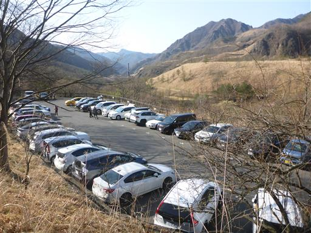
ここは3つの河川が一つに合流しているところ。広い河原だ。
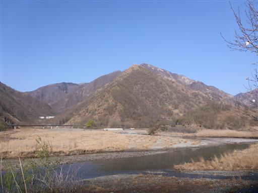
久蔵川を渡る。
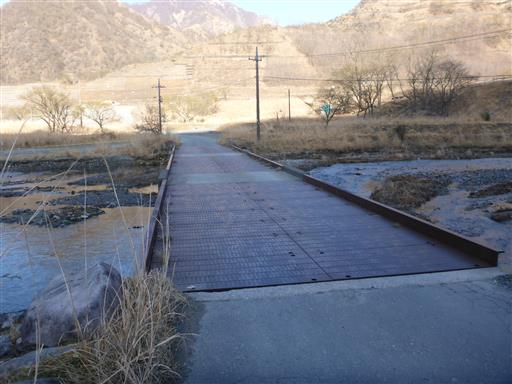
続いて松木川を渡る。水が透き通っていて非常に美しい。
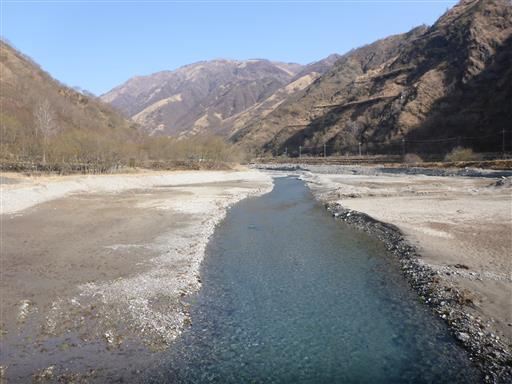
古い水道管の下を潜る。
レトロなデザインだが今でも使われているのだろうか？
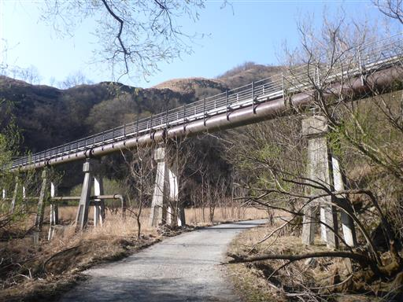
囲い罠。
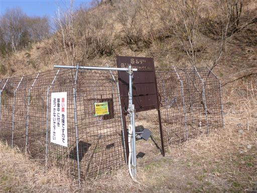
登山口まで車道歩きが続く。
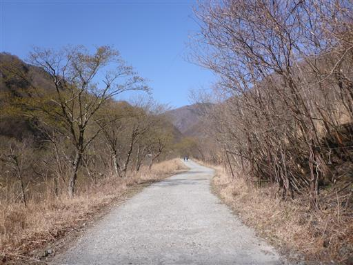
この辺りは標高が高いので、新緑の季節にはまだちょっと早い。
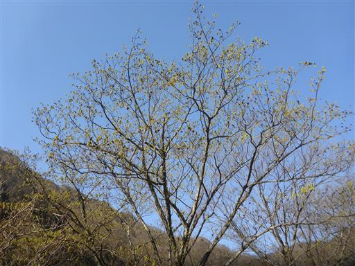
洗い越し。水量は少ないので問題なく渡れる。
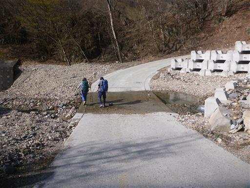
中倉山の登山口に到着する。
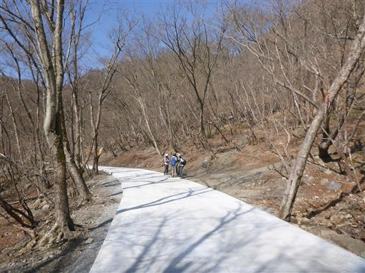
ここから登山開始。いきなりの急斜面の登りが続く。
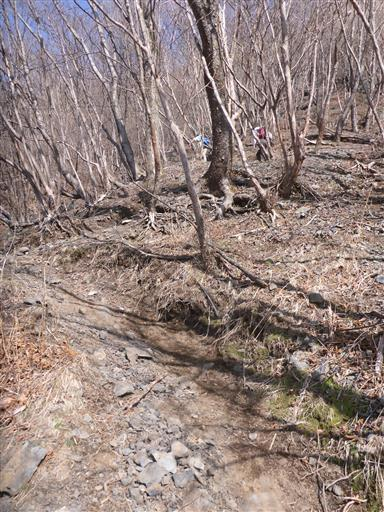
40分ほど登ると尾根に出る。
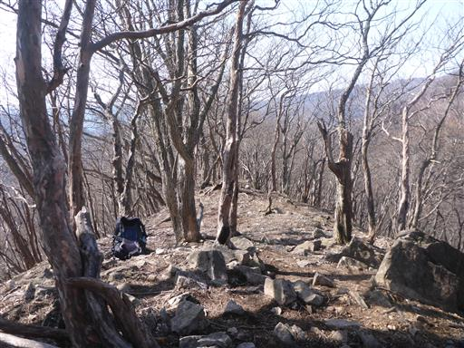
ここからは少し傾斜が緩むが、登りは続く。
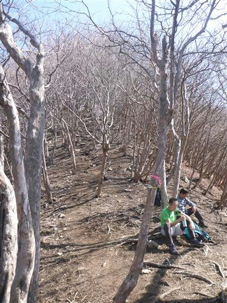
途中で展望が広がる。一番右のピークが目指す沢入山の手前あたりだ。
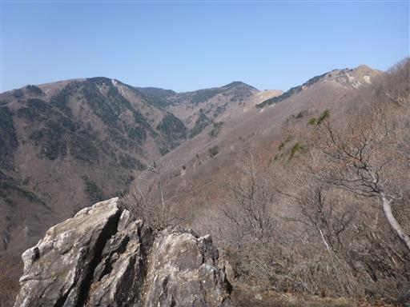
奥に男体山、右に見えるのが半月山だ。
男体山と半月山の間に中禅寺湖が広がっている。
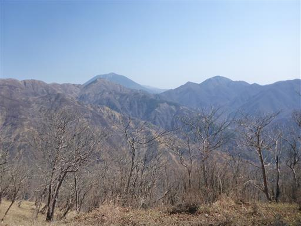
主稜線に出て少しずつ展望が広がってきた。
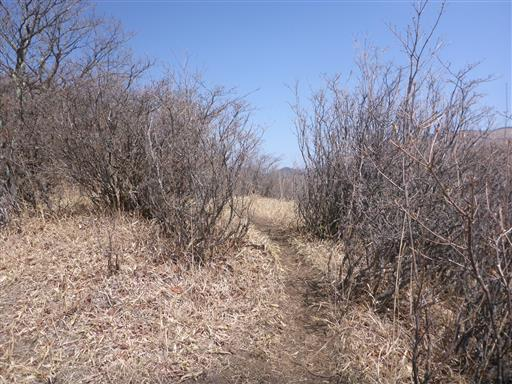
しばらく進むと視界が大きく広がる。すぐ先が中倉山の山頂だ。
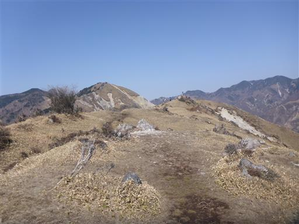
中倉山の山頂に到着。標高1530m。
360度の大展望が広がる素晴らしい山頂だ。
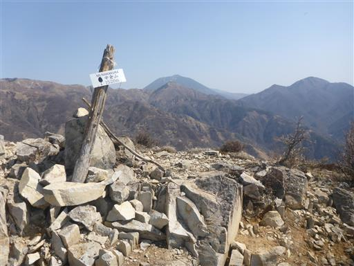
大平山の巨大な山体。
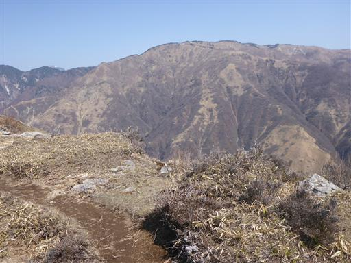
遥か眼下の松木川を見下ろす。
この山に木が生えていないのは、足尾銅山の鉱毒の影響である。
足尾銅山で発生した亜硫酸ガスは松木川を遡って流れていき
この辺り一帯の木はほとんど枯死してしまった。
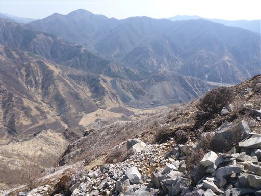
ここから沢入山までは最高の展望が広がる尾根道だ。
鉱毒の影響による大展望ということで、少々複雑な気持ちになる。
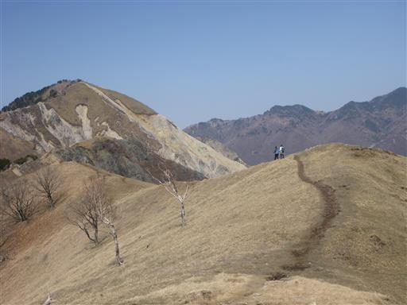
亜硫酸ガスの中でたった一本生き残ったブナ。
孤高のブナと呼ばれている。
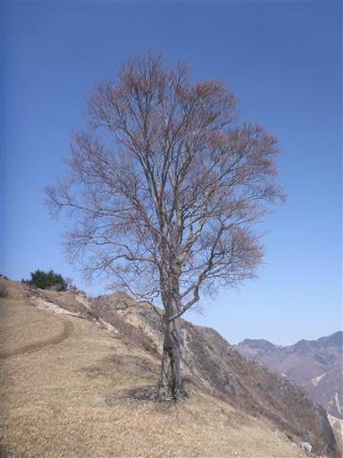
この先は少し岩場がある。難しい岩場ではないがちょっと渋滞。
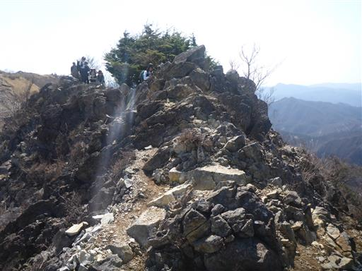
眼下に見える松木川。松木川を遡る道はいつか歩いてみたい。
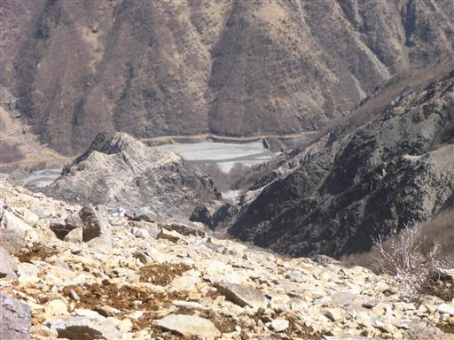
目の前にそびえる波平ピーク。こちらから見ると三角形の立派なピークだ。
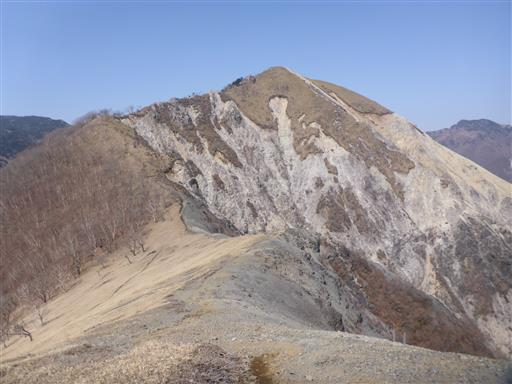
歩いてきた絶景の尾根道を振り返る。
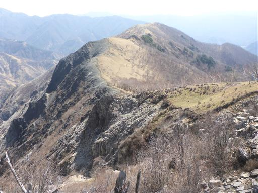
波平ピークに到着。
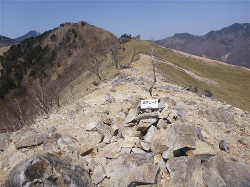
すぐ左隣の尾根は深い緑に覆われている。
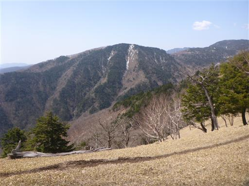
右隣は松木川を挟んだ大平山。
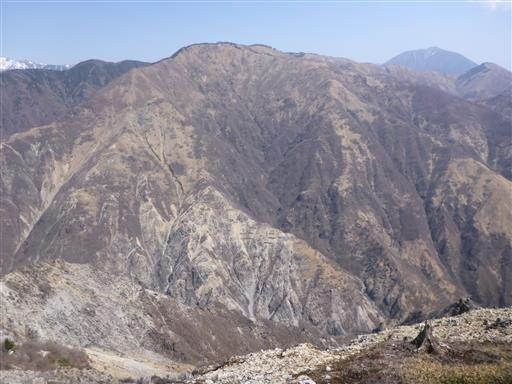
沢入山に到着。標高1705m。
山頂だけは少し木に囲まれている。
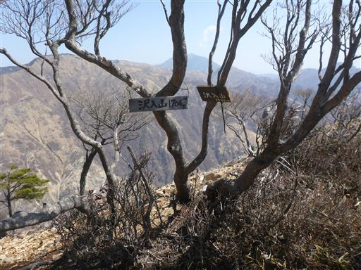
山頂から少し先に進んだところに展望の良さそうな場所があるので、
そこまで行って昼食をとることにする。
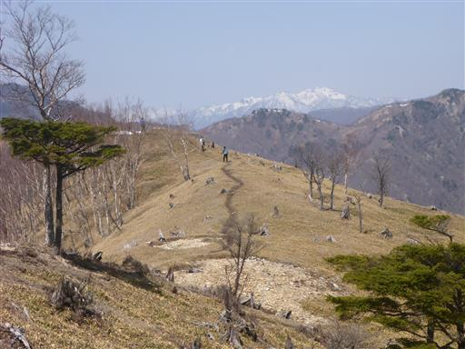
目の前に見えるのは皇海山。足尾の盟主だ。
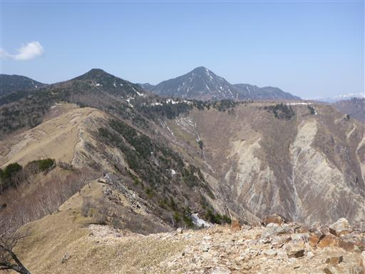
中禅寺湖南岸尾根の向こう側には日光白根山が見える。
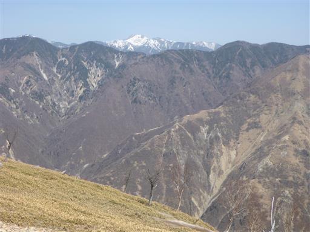
こちらは上州武尊山。まだ雪で真白だ。
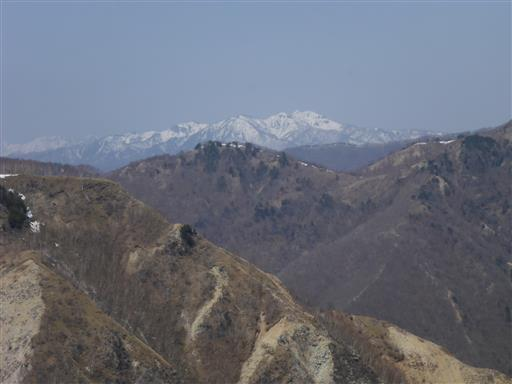
皇海山から南に延びる足尾山塊の主稜線、袈裟丸山の辺り。
こちらもいつか歩いてみたい尾根だ。
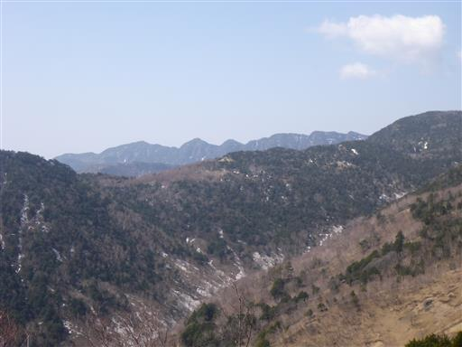
昼食をとったら下山開始。元来た道を戻る。
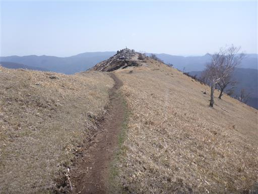
下山中に見つけた水仙。登山道から少し外れたところに場違いな感じで咲いている。
なぜここで咲いているのか不明だ。
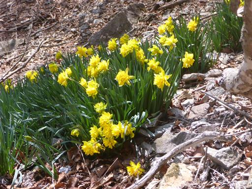
下山。あとは車道を歩くのみ。
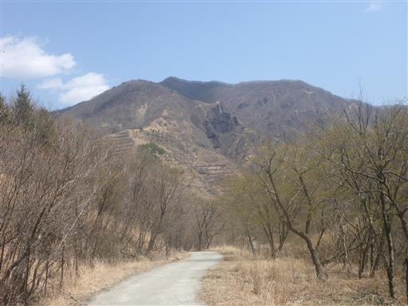
久蔵川を橋で渡る。こちらの川も水がきれいだ。
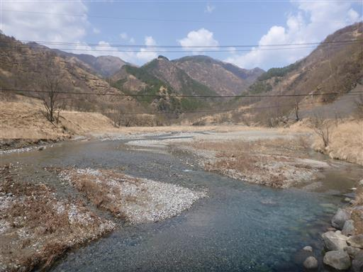
駐車場に戻ったら松木川に架かる吊り橋を渡って銅親水公園に寄り道する。
人通りがほとんどない割には随分と立派な橋だ。
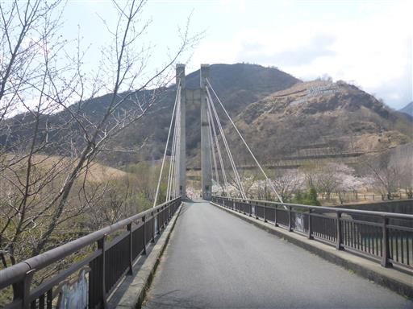
橋から眺める巨大な砂防堰堤。
松木川沿いの木がなくなり、土砂が流れるようになったために築かれた。
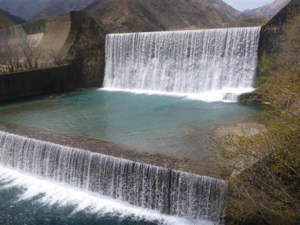
公園内に小振りの建物がある。
足尾に関する展示がなされてそうだが、入場料がかかるので入るのを遠慮してしまった。
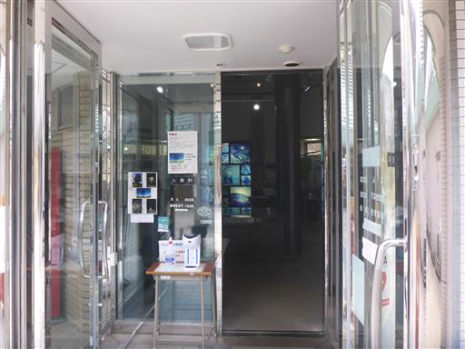
ちょうど今は桜が満開だ。きれいな桜を眺めてから帰宅の途に就く。
中倉山～沢入山は大展望の尾根道で、素晴らしい稜線だった。
思った以上に登山者の数が多かったが、その人気も十分にうなずける。
一方、足尾銅山の負の影響が色濃く残っており、正と負の両方の側面を見た山行だった。
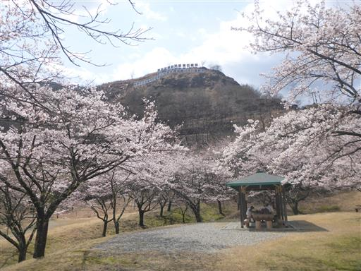